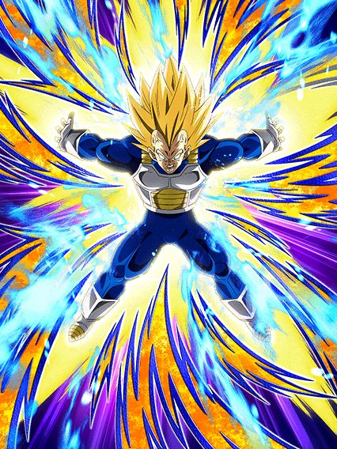
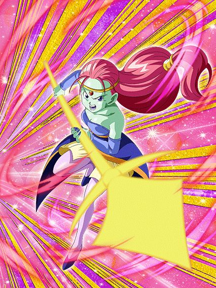
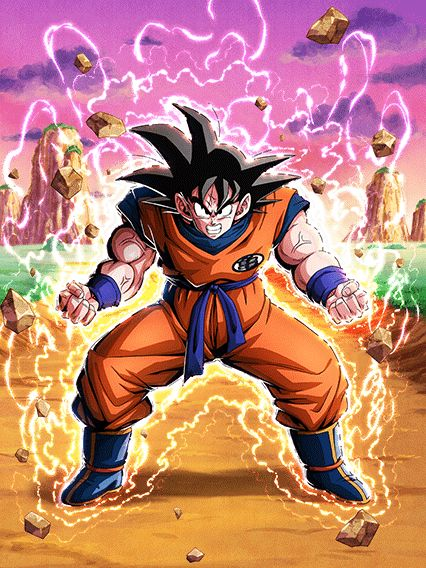

Mais uma celebração de ano novo toda bagunçada.
Cards e EZAs interessantes, mas slk, tema todo zuado e aleatório, aí é chato

O card de Super Battle Road definitivo.
Esse cara é perfeito pra eventos mais rápidos ou que possam ser stunados, já que ele dá crítico garantido e stun garantido no Super Attack
Eu diria que ele é bem frágil, mas ele é lider pra Pure Saiyans então ele vai ter opções pra ajudar ele, além de ganhar um pouco mais de defesa quando leva 1 golpe
Por sinal ele tem uma active skill incrível onde ele diz o lendário "Eu sou o Super Vegeta!"
(Ele vai ser solado logo depois)
O suporte para qualquer Cell.
Esse cara dá 40% de ATK e DEF pra aliados Android/Cell Saga q forem Extreme Class e tem Big Bad Bosses, fica bem óbvio saber a qual time ele pertence
O problema desse cara é ele querer inimigos específicos, já que caso o inimigo seja Android/Cell Saga, ele ganha 18% de chance de crítico e 18% de redução de dano
E caso o inimigo tenha "Android" no nome, ele ganha 50% de chance de stun
No geral, ele faz o papel de suporte muito bem e é isso

Ah, ela é um suporte pra absolutamente ninguém, entendi.
É um bom card, suporte, orb change, muito bom
O problema é que ela precisa de um aliado Universe 11 pra ter isso aí e eu nem sei se tem como montar um time completo dessa categoria
Ela também tem 30% de chance de desvio que né.. podia ser um pouco melhor

Essa garota aleatória ganhou um card de summon antes do Kid Buu ganhar um LR.
Em resumo, ela tem muitas chances de 30% de coisas acontecerem
30% de chance de lançar um super adicional
30% de chance de desvio
30% de chance de ter +2 de Ki (?????????)
Ela também tem 50% de chance de stun, e caso o inimigo esteja stunado ela dá crítico garantido
Em geral um card com muitas chances e poucos resultados, certamente um dos cards que existe
São certamente EZAs.
A 18 é uma nuker que precisa do time Peppy Gals completo e é basicamente só isso
O engraçado dela é ela ter desvio garantido e stunar o inimigo caso seu HP estiver abaixo de 18%, e isso é um efeito "permanente" (enquanto você estiver abaixo de 18%, vai continuar desviando infinitamente
Fascinante.
A Mai é uma boa suporte, dando Ki, 20% de ATK e DEF pra qualquer AGL e ainda dá 30% de ATK e DEF pra Peppy Gals (então uma Peppy Gals AGL ganha 50% de suporte, braba)
E pra completar, ela ainda tem um scouter que fica ativo enquanto teu HP estiver abaixo de 50%, achei muito bão.
A Pan é interessante, ela tem defesa extra por 7 turnos, que é bem útil já que a cada turno que ela estiver, ela ganha 15% de chance de desvio até chegar em 60%
E obviamente 60% de chance de desvio é bem forte né
Eu vou admitir que já confundi a Videl com uma F2P dela umas 3 vezes pelo menos.
Enfim, ela precisa do time Peppy Gals completo, se não, ela não tem passiva.
Tirando isso, ela debuffa o inimigo e tem a mecânica de curar 20% do dano que ela der como HP, então é, bem interessante
A Bulma tem 30% de chance de desvio e builda 10% de ATK e DEF até chegar em 50%, que é minimamente decente e uma build de desvio no hidden potential pode ajudar ein
E caso você não desvie, vai estar ajudando de qualquer jeito já que ela builda outros 50% tomando golpes, então é, contribui de qualquer maneira
Ela também cura 5% de HP por rainbow orb pega, se isso for do interesse de alguém
Até que ela não é tão ruim não.
Essa 18 se resume a: Androids
Ela é suporte pra categoria Androids, precisa de um time completo de Androids pra ter a passiva completa, e tem 30% de chance de lançar um super attack adicional caso quanto tem outro card da categoria Androids no turno
Acho que ficou bem fácil de entender né?
Eu acho o suporte dela legal, então bom card
Esse EZA buffou ele bem ein.
A grande mecânica desse Goku é que no slot 2 ou 3 ele tem 59% de redução de dano contra ataques básicos e countera eles, o problema é que antes do EZA ele não tinha defesa nenhuma, então nem os ataques básicos ele tava tankando
Felizmente o EZA deu pra ele mais defesa e um buffzinho a mais quando ele dá super, e é só isso
Pelo menos agora dá pra ver os counters sem levar 100k de dano

Sim, a parte 2 do Tanabata de 2021 veio pra cá.
Bom, o Janemba é bem simples, você absolutamente TEM QUE USAR ELE NO SLOT 1 OU 2
Nesses slots ele tem defesa ativa, então obviamente se você usar ele no slot 3, vai resultar em morte na certa
Mas em geral a posição do Janemba no turno é no slot 2, já que especificamente nesse slot ele builda 6 de Ki e 66% de ATK e DEF com 3 ataques
Pq ele é tão restrito a slots específicos? Não faço ideia.
Bom, ele também tem 50% de chance de nulificar supers de Ki, que é útil né
E pra finalizar, o Janemba tem um rage mode, que eu acho muito brabo, mas é bem ruim de usar já que só pode ser usado a partir do turno 6

Esse cara é do rock.
A OST desse cara é o rock puro, simplesmente genial, além das artes lindas né
Bom, o Janemba tem 1 linha de passiva que dá pra ele 1 de Ki a mais por orb pego, é isso
Felizmente ele também tem 50% de chance de critar direto nos super attacks, então ele vai dar um dano minimamente decente
Esse rage mode só dura 1 turno, então é um pouquinho de dano grátis e acabou.
Com certeza uma das atualizações mais importantes na história do Dokkan.
Eu comecei a jogar um tempo antes dessa atualização, então eu senti um pouco a diferença de como o Dokkan era antes e depois dela
Pra começar, as 2 novidades mais importantes foram o Auto Mode pra usar nos eventos, que faz com que farmar personagens, medalhas e etc um processo menos massante e mais tranquilo
E também a função de automáticamente completar as dificuldades mais fáceis de um evento caso você complete a mais difícil logo de uma vez
Essa segunda função é absurda, é simplemente genial pro modo quest, já que como eu disse, eu joguei um pouco antes da atualização e completar cada cada fase do quest 3 vezes por 3 ds era um inferno e eu não tinha paciência pra farmar muito
Outras funções facilitam o hidden potential, formação de times, sistema de friend e etc
Em geral uma atualização incrível que mudou o Dokkan pra melhor
Outra coisa que a atualização trouxe foi uma mudança no tutorial do Dokkan, que agora te dá um Goku LR muito decente pra usar
Até eu mesmo, que já tava montando um timezinho, usei bastante esse goku
Então bora falar dele né

O personagem F2P definitivo..?
Esse Goku é um líder de 59% de HP, ATK e DEF pra todos os personagens, e sim, a porcentagem na leader skill não é grande, mas esse cara contribui tanto pro time que vale muito a pena
Além da Leader Skill, ele também dá 30% de ATK e DEF de suporte pra todos os personagens
Isso tendo alguns buffs na passiva, no super, e o dano dele fica mais alto caso o inimigo seja Extreme Class
Pra finalizar, o Goku tem uma Active Skill que pode ser usada a partir do turno 5, e ele só usa o kaioken pra dar dano no inimigo
O cara é um card F2P muito decente e completo, tem uma OST boa, animações boas, kit decente, muito bom
Eu acho que eles ficaram com preguiça de fazer alguma coisa aqui.
Bom, o Super Trunks PHY é completamente horrível e inútil, a passiva dele é só 200% de ATK e DEF e nada mais, é só isso
O STR já tem muito mais coisa, mais ATK e DEF, tem um buff de DEF que dura 10 turnos, tem chance de stun caso tenha um Vegeta no time, simplesmente mil vezes melhor que o PHY
Com isso dito, ambos são bem medíocres.
Eles realmente olharam pra esse cara e disseram "Ele precisa de uma Bulma no time"
Esse cara não tinha defesa nenhuma antes do EZA, e esse foi o foco aqui, mas eles exageraram um pouco nas restrições..
Bom, ele precisa de uma Bulma no time pra ter mais Ki e 20% de redução de dano, que ajudaria ele um pouoc
Ele também quer um Trunks no time pra ter mais 20% de ATK e DEF
E ele também quer um aliado ou inimigo Goku pra ter 20% de chance de crítico
Já deu pra perceber o problema né?
É impossível ter uma Bulma no mesmo time que ele, a maioria dos Trunks são fracos ou mid, e assim o Vegeta vira um papel
Uma coisa legal pelo menos é que caso você caia abaixo de 30% de HP, o Vegeta ganha 12 de Ki e dá crítico garantido pra você ter uma chance de matar o boss antes que ele te mate
Você chegou ao fim dessa página!
Obrigado por ler tudo, e fica a vontade pra ver outras